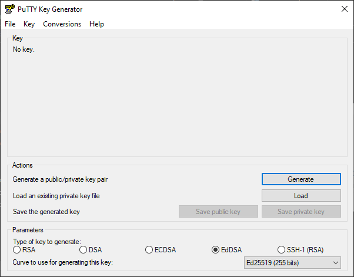
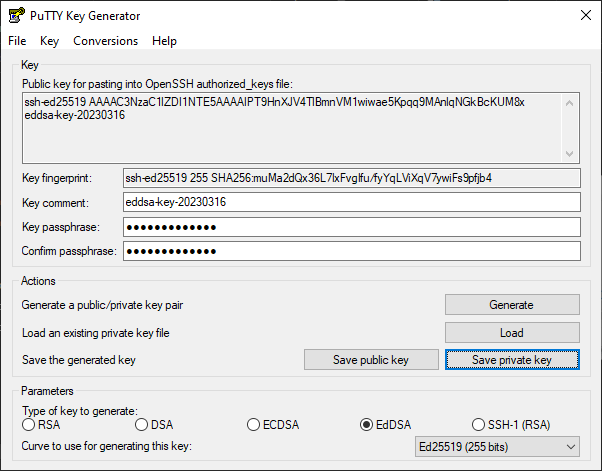
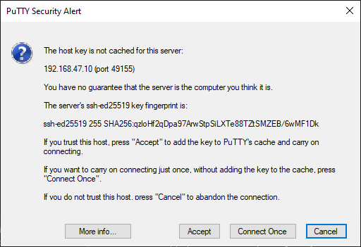
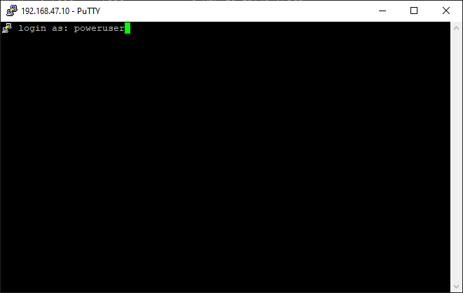
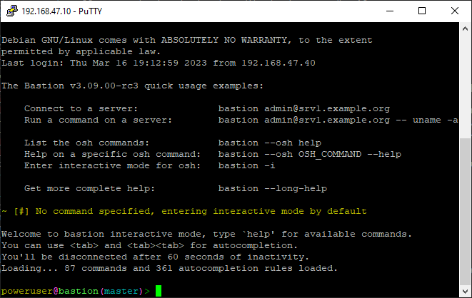

Using PuTTY with The Bastion
First, you'll need to generate a pair of SSH keys. To this end, use the PuTTY companion tool: PuTTYgen.
Before hitting Generate to generate a new key pair, ensure that EdDSA is selected, with the Ed25519 curve. You'll have to move your mouse a bit to feed the pseudo-random number generator.
Once the key has been generated, you'll have to input a passphrase that will protect your key. Ensure this passphrase is sufficiently hard to guess, but ensure you'll not forget it! Once you've entered your passphrase twice, it should look like this:
You can now hit Save private key and choose a file name.
Also save the corresponding public key next to it by hitting Save public key,
but don't close PuTTYgen yet.
The public key you've just saved, which is also displayed at the top of the PuTTYgen window,
starting by ssd-ed25519 AAAA... is the public key you'll need to give to The Bastion when
creating your account there, so you can copy/paste it when The Bastion asks you for a key:
Now, you can close PuTTYgen (as you've saved the private and public keys in their respective
files, you'll be able to use them later), and open PuTTY itself:
To create the proper connection settings, set your bastion host name (or IP) and port in the window above, and leave the connection type to SSH.
Then, navigate to Connection > SSH > Auth > Credentials, and use Browse... to set the
location of the private key you've generated with PuTTYgen. Ensure you use the private
key, not the public key: the private key usually ends in .ppk, as shown below:
Then, navigate back to Session, and save the session settings under any name you wish,
so that the next time you open PuTTY, you'll be able to load these settings back:
Then, you can click Open to establish the connection. On the first connection attempt, you'll be prompted with this dialog box:
This is because PuTTY never connected to the bastion before, and asks you to verify the
bastion's host public key. This is expected on the first connection, so you can click Accept.
You'll then be prompted for your login, which is the account name you've created on the bastion, associated with your public key:
You'll then need to type the passphrase protecting your private key, so PuTTY can use it:
Once done, the bastion should authenticate you, and drop you in interactive mode:
You can now use The Bastion!